- 挑一個議題17 個議題，從關心的開始
- 看做過的人怎麼做每個專案一頁，一句話講完
- 找到人，一起做討論區、聯絡方式都在
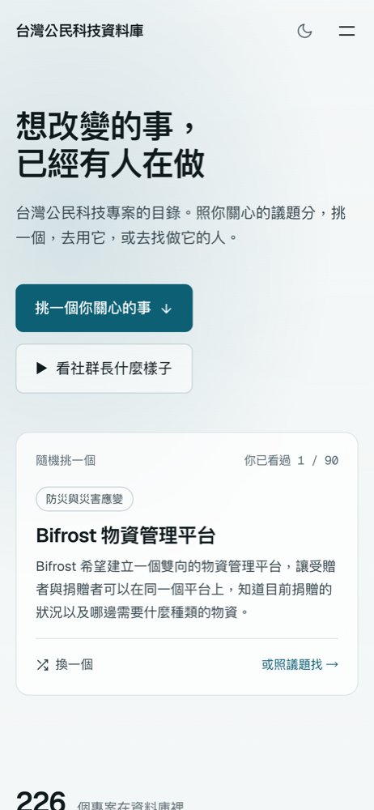

story
步驟配畫面
左邊步驟、右邊畫面，亮到哪一步就換哪一張。自動輪流，或 data-on="step" 按一下換一步。
跟 AI 說
「做 story：三個步驟配三張手機截圖」
<div class="story" data-fx="story">
<ol><li>…</ol>
<div data-frames><img>…
WEB-DECK
挑一個效果，跟 AI 說「第幾頁的哪裡用哪個」就好。點名字直接跳過去看。
按鍵
進度條滑過去會看到那一頁的縮圖，點下去就跳過去。
stagger
每一頁的東西照順序浮上來，最常用。按 R 重播。
「第 3 頁的三張卡片依序浮出」
解決什麼 一句話講完
誰在用 一句話講完
怎麼參與 一句話講完
step
按 → 一次出現一組，全部出完才翻頁。也可以讓舊的東西在同一下消失（這頁就是）。
「第 24 頁先放三張卡，按一下卡片糊掉，換成三行重點逐行出現」
bars
進到這頁時，長條一起長出來。想強調的那幾條加 hot 會變成橘色。
「第 18 頁做 bars，預算 60%、假訊息 45%……，預算那條標橘色」
count
從 0 數到寫在裡面的數字。逗號、百分比、小數點都照原樣保留。
「第 35 頁的 1,165 用 count 跳上去」
在 Google 搜尋
台灣有哪些公民科技專案？
type
一個字一個字打出來，適合搜尋框、對話、提問。
「第 12 頁的搜尋字用 type 打出來」
想參與的人，最常卡在不知道從哪裡開始。
mark
一段文字裡，把重點畫上螢光筆。
「第 9 頁的『不知道從哪裡開始』用 mark 畫起來」
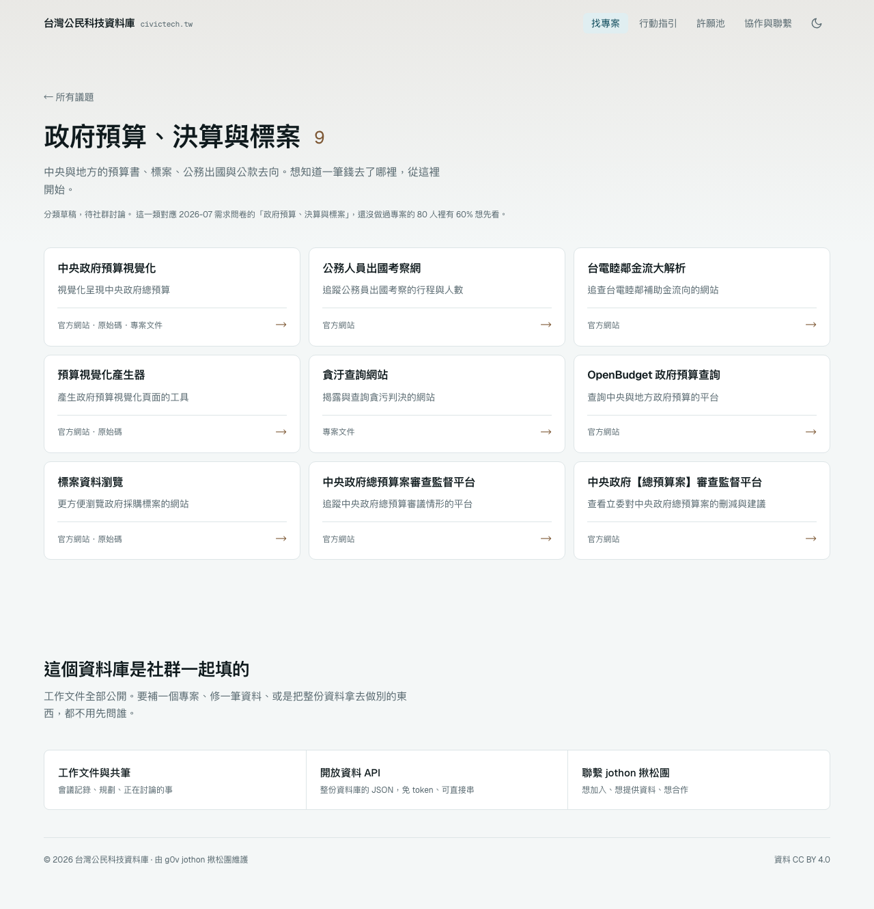
pan
整頁的長截圖放進框裡，慢慢往下捲再捲回來。捲多遠會自己算。
「第 10 頁右邊放議題頁的長截圖，用 pan」
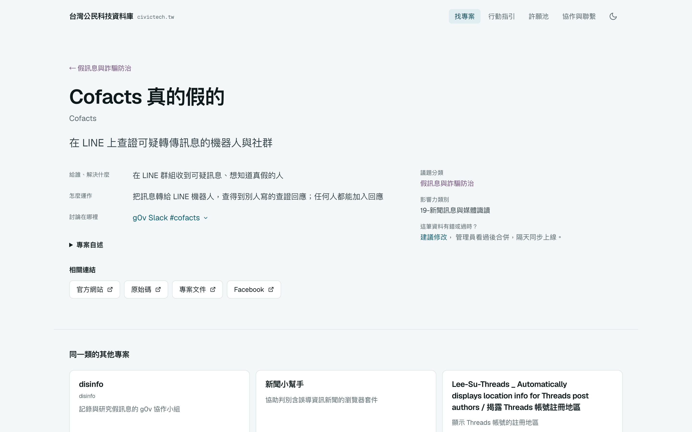
zoom
慢慢推近截圖上的一點，再拉回來。加 data-once 就只推一次。
「第 25 頁的截圖推近到左上的專案名稱」
（用 A 標註點一下位置最準）
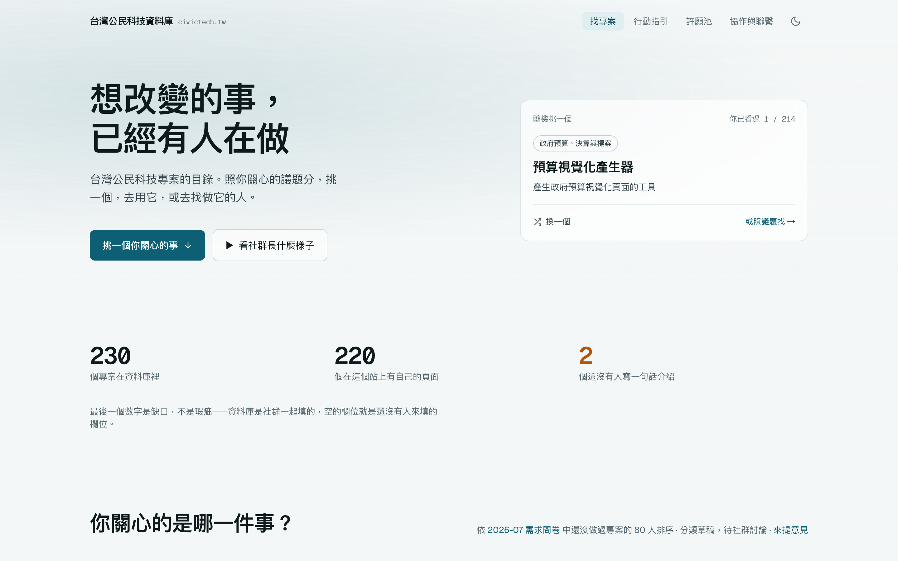
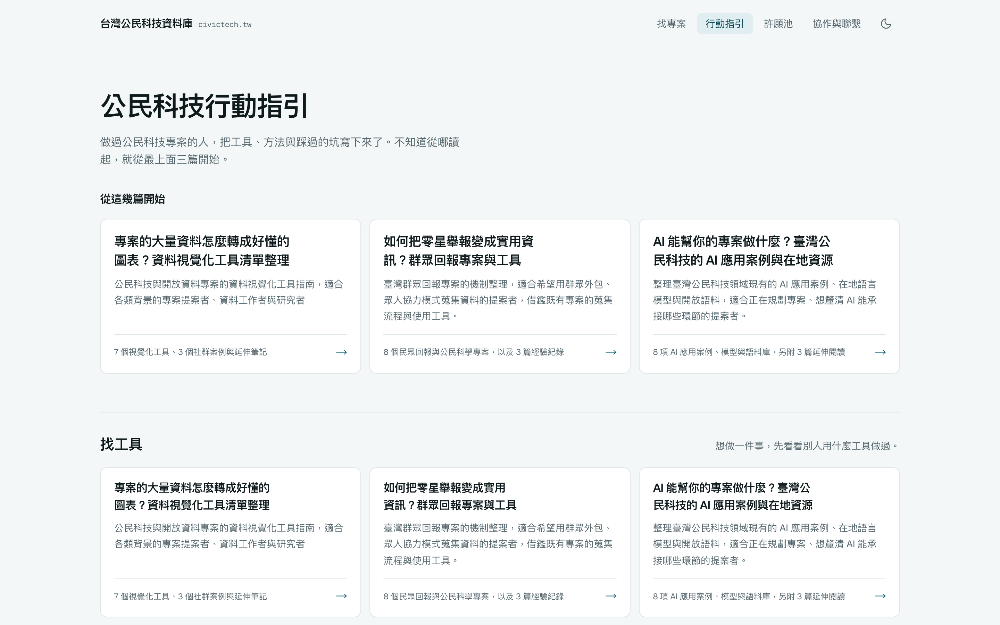
cycle
幾張圖輪流淡入淡出，適合「同一個東西的幾個樣子」。
「第 6 頁把四個預算網站的截圖做成 cycle」
clickpath
游標在幾張截圖上移動、點擊、換頁，示範「要點哪裡才找得到」。會一直循環。
「第 26 頁做 clickpath：先點右上的『討論』，再點『過去的討論』」
orbit
幾個步驟排成一圈，一個點沿著圈走，走到哪個就亮哪個。適合「會回到起點」的流程。
「第 31 頁用 orbit 畫資料流：資料庫 → API → 網站 → 使用者 → 建議修改 → 審核」
assemble
一組卡片從四散的位置飛進來，拼成格子。適合「這些合起來就是解法」。
「第 10 頁的 bento 用 assemble 飛進來」
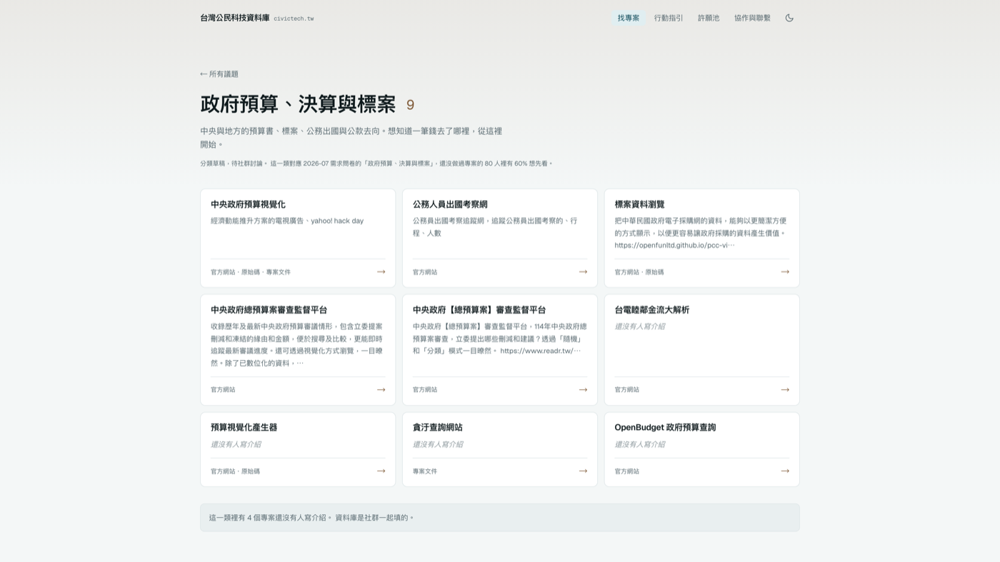
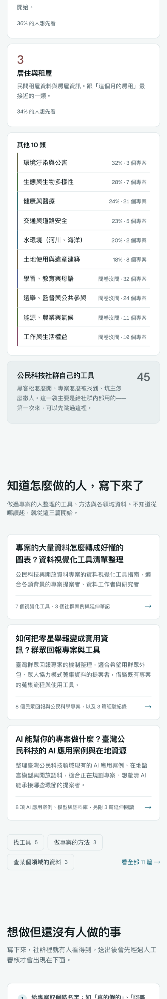
用無人機與 beacon 協助登山搜救找人
蒐集無版權限制的繁體中文句子
從地名與文化素材認識災害潛勢
bento
格子從離它最近的畫面邊飛進來，卡位時微微回彈，整面再慢慢拉近。每格裡面放別的效果：pan、slot、pop、compare、stack、type、terminal。
「做一頁 bento：8 格，照議題找、226 個專案、手機版、深色模式、隨機推薦、許願池、API」
pop
一組小東西一個接一個「啵」地彈出來，最後微微回彈。適合標籤、色塊、logo 牆。按 R 重播看比較清楚。
「17 個議題的標籤用 pop 一個個彈出來」
compare
兩張圖疊在一起，一條線左右來回掃：線左邊是第一張，右邊是第二張。適合淺色／深色、改版前後。
「首頁淺色和深色用 compare 對照」
用無人機與 beacon 協助登山搜救找人
蒐集無版權限制的繁體中文句子
從地名與文化素材認識災害潛勢
stack
一疊卡片，最上面那張每隔一陣子換到最底下，下一張浮上來。適合「隨機抽一個」「還有很多」。
「隨機推薦做成 stack，放三張專案卡」
spot
截圖其他地方變暗，只亮一塊。有好幾塊的話，每按一下 → 移到下一塊。
「第 25 頁的截圖用 spot，依序亮標題、簡介、右邊的連結」
（按 A 拖拉框出範圍最準）
morph
從真的網站拍下來：游標點一張卡片，卡片長成整頁，標題飛到新位置，其他內容浮上來。
「做一段 morph：在議題頁點『中央政府預算視覺化』，變成它的專案頁。標題、簡介要飛過去」
map
真的地圖，點位一個個掉下來；每按一下 →，飛到下一個地點。加 data-auto 就自己飛。需要網路。
「第 5 頁放樹林的地圖，三個車站插點，按一下飛到樹林車站、再按飛到山佳」
live
把網站直接放進投影片，可以現場點。用手機的寬度畫再縮小，就是手機上的樣子。需要網路。
「第 8 頁放 misheng.app 的手機版，可以現場操作」
frames
截圖、影片、真網站外面套一個框，一看就知道是網頁還是手機。
「第 7 頁的截圖套瀏覽器框，網址寫 civictech.tw」
video
一整頁只放一支影片，翻到就自動播放。適合段落之間的轉場。
「第 15 頁放 06-explode.mp4 當轉場」
letters
標題一個字一個字從模糊裡浮上來。適合開場、段落標題。
「封面標題用 letters」
在這裡，你可以
讀別人的經驗｜串接資料｜找到夥伴｜開始一個專案
rotate
一句話裡的某個詞一直換，講「可以做很多事」很好用。
「『你可以＿＿』那句用 rotate，輪流換成讀經驗、串資料、找夥伴」
17 個議題
226 個專案
flap
像車站的翻牌看板，每個字先亂翻幾下再停住。適合數字、名單。
「第 3 頁的兩行數字用 flap 翻出來」
slot
每一位數像里程表一樣各自滾動再停下。跟 count 比，更有「機器在跑」的感覺。
「226 用 slot 滾出來」
particles
滿畫面的點飄過來，聚成一行字。適合結尾的網址、品牌名。只支援一行字。
「最後一頁的網址用 particles 聚出來」
textmask
超大的字裡面填一張圖，圖慢慢移動。適合當段落的封面。
「段落頁的『公民科技』用 textmask，裡面放首頁截圖」
tilt
截圖斜躺著再轉正（左），或左右輕輕轉（右）。data-mode="hold" 會一直斜著慢慢飄。
「議題頁截圖用 tilt 斜躺進來」
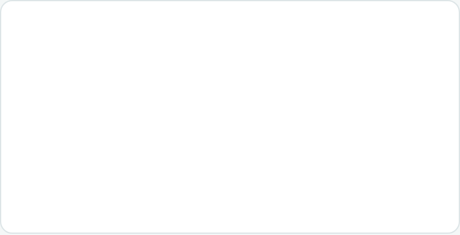
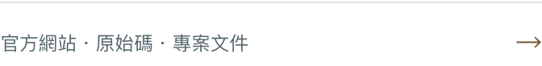
explode
一張卡片拆成好幾層往上浮，每層拉一條線說明它是什麼。適合解釋「這個設計由哪些部分組成」。
「專案卡用 explode 拆成名稱、介紹、連結三層」
每個專案
parallax
前中後幾層，越前面動得越多，滑鼠移動時也會跟著。讓靜態截圖有空間感。
「首頁截圖當背景，前面浮兩張卡，用 parallax」
dive
往截圖的某一點一直推近，推到底就變成下一頁。加 data-on="step" 就等你按 → 才鑽。
「從議題頁鑽進第一張卡，變成專案頁」
wipe
一條色帶斜斜掃過，後面露出第二張。適合改版前後、淺色深色對比。
「首頁淺色版用 wipe 擦成深色版」
專案名稱和一句話介紹
它解決什麼、怎麼運作
想修改資料，從這裡建議
hotspots
截圖上幾個會跳動的點，每按一下 → 打開下一個說明。加 data-auto 就自己輪流。
「專案頁截圖加三個 hotspots：名稱、運作方式、建議修改」

story
左邊步驟、右邊畫面，亮到哪一步就換哪一張。自動輪流，或 data-on="step" 按一下換一步。
「做 story：三個步驟配三張手機截圖」
有沒有網站整理台灣的公民科技專案？
有！每個專案都有自己的網址
civictech.tw/p/cofactsCofacts 真的假的：在 LINE 上查證可疑訊息
太好了，我轉給我們班
chat
訊息一則一則跳出來，對方會先「打字中…」。適合講「怎麼被分享出去」。
「做一段 chat：朋友問、我回一個連結」
terminal
指令自己打出來，按下去之後回應一行一行印出。適合講 API、開放資料。
「做 terminal：curl 我們的 API，印出前兩筆」
tunnel
一大串名字貼在隧道牆上往你衝過來。講「有這麼多」的時候很有感。
「把全部專案名稱做成 tunnel，上面疊一句『226 個專案』」
network
每個議題是一顆星，專案是圍著它的小點，整團在 3D 裡慢慢轉。看得出哪裡多、哪裡少。
「用 network 畫議題和專案的星團」
ring
一圈環慢慢填到比例。裡面的數字可以再加 count 一起跳。
「226 個裡有 84 個寫了簡介，用 ring 畫」
兩步就到每一個專案
四行讀完一個專案
討論在哪，一鍵就到
開放 API
建議修改
feature
一組格子輪流有一格變大，其他格子讓位。適合一次介紹好幾個功能。
「五個解法做成 feature，每 3 秒換一個變大」
swarm
一大堆小東西從畫面深處衝出來，排成整齊的一片。跟 assemble 比，適合「很多很多個」。
「全部專案名稱用 swarm 飛進來」
civictech.tw
collapse
畫面上的東西全部縮進中間，最後只剩一行字。適合結尾。
「最後一頁把六張截圖 collapse 成網址」
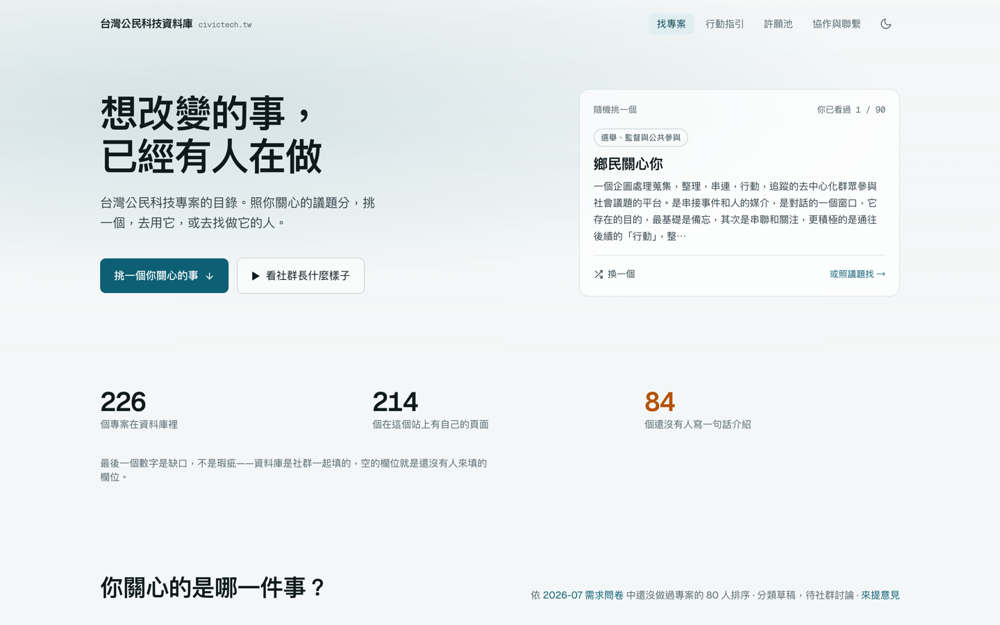
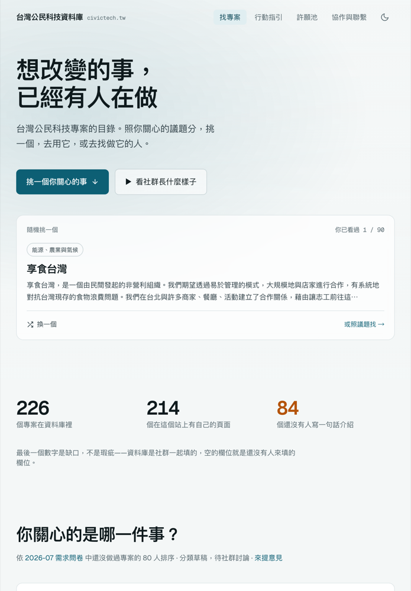
devices
桌機、平板、手機排在一起，一看就知道「哪裡都能用」。桌機也可以換成 laptop（筆電）。
「放一頁 devices，三種裝置的截圖」